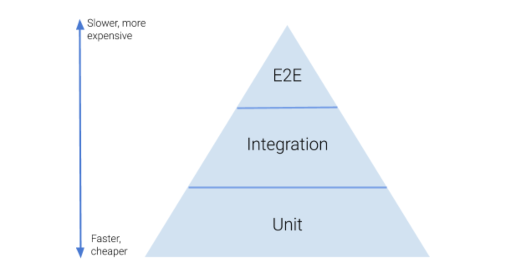

Note, this post was originally published on INNOQ blog together with Torsten Mandry.
In two previous posts (see below) we discussed the benefits of automated tests and the properties of a good test. So far we were trying to avoid differentiating the tests in any way. This time we want to address one way how tests can be classified: tests granularity.
Previous posts:
What is granularity?
When we say test granularity we mean: how isolated or integrated the test is. We could instead be talking about unit, integration, end-to-end, and other kinds of tests, but that would be problematic because the semantic of those names isn’t clearly defined. For example: whenever we say “unit tests”, people immediately try to refer to the concept they know, they’ve heard about, that they are working with, etc. Unfortunately, we believe that quite often those ideas are not equal among developers. Our understanding of the term might be different from those of each of our readers. Moreover, whenever we mention “unit tests”, your brain will not only load this particular term into your working memory, but it will also pull the whole context, a lot of other terms, ideas, experiences, etc. along with it. Quite often this whole context has a bad connotation, probably every developer has or will have bad experiences with testing during their career. To add insult to injury, we also believe that quite often those terms are understood wrong. Therefore, we don’t want to use the usual terms. We hope that this will help us to talk about what really matters.
Test pyramid
You have probably heard about the test pyramid many times before. The term was introduced by Mike Cohn in his book “Succeeding with Agile”. When you search on the internet you will find many slightly different versions of this pyramid picture. Here’s one we found in a blog post by Jessie Leung. We like it because it’s pretty simple and straight-forward.

The Basic idea is, that most of the tests in your application should be isolated tests because they’re faster and cheaper. They form the base of the pyramid. As you move up the pyramid the tests become more integrated – you test components, then combine them into modules and test those, eventually arriving at the top. There your tests are treating your system as a whole and interact with it as the actual users (human or otherwise) would. But the higher you are the more expensive it is to create such a test and it takes more time to execute it. So, you want to have a few of these tests to keep these downsides low.
In general, that sounds like a good idea, right? It’s always great if I’m able to test as much functionality as possible with a suite of cheap and fast running isolated tests, and only have very few expensive, slow, integrated tests that ensure that everything works together, isn’t it? Well, no, not necessarily. Think about the testing principles we wrote about in our last post “Anatomy of a Good Test”. Especially the one that states that tests should be insensitive to structural changes. We also said that isolated tests drill into the implementation of your system and therefore explicitly bind to its structure. So, if you follow the test pyramid and focus on writing isolated tests, your test suite will automatically become sensitive to structural changes. If you change your implementation, tests will fail although your system still does the very same as before, just in a different way. Even more critical is the common misinterpretation of the test pyramid, that you should have as few integrated tests as possible. If you avoid integration tests, you will probably have no implementation agnostic safety net that tells you if your system as a whole is working as expected. In case of a bigger refactoring, where your isolated tests do not help as well, you have to find out in other ways.
If we would focus only on the ‘insensitive to structural changes’ principle, we would probably do exactly the opposite of what the test pyramid proposes. We would only write fully integrated end-to-end tests that do know nothing about the internal structure of our system. But that’s the Ice-Cream Cone anti-pattern, isn’t it? Yes, it is, but, depending on your project context, it can be perfectly fine. What if it’s not very expensive for you to write end-to-end tests because your system only provides a very simple API that can easily be tested in full integration? Those tests might take a little longer to run, but perhaps that’s also not a problem in your context? In those kinds of projects, having a comprehensive suite of end-to-end tests, and maybe only a few isolation tests of some more complex components, sounds like a reasonable setup.
So, is the test pyramid completely wrong, then? No, it only assumes that ‘fast’ and ‘cheap to write’ are the two most important test principles. This might be true in a lot of project contexts, and, in this case, it’s probably a good idea to follow the pyramid. But there are other contexts, where other principles are more important. In those projects, just blindly following the test pyramid, will lead to a suboptimal test suite.
Meaningful tests
The important thing about the test pyramid is: it’s a guideline, not a strict rule. Use it to evaluate and challenge the test suite you develop. If the distribution of your tests on the isolation-integration-axis forms a different shape, but you can explain why it makes sense in your context, and writing and executing your tests do not hurt you, it’s OK. If, on the other hand, you feel like your tests should form a pyramid, but they don’t, stop and think about it. Maybe you’re on the wrong granularity level. But, it’s also possible that you’re on the right track but still aim for the wrong shape of your test suite.
Far more important than the test suite shape is having a clear idea of what are the relevant aspects of your system and in which granularity you want to test them. With this idea in mind, you can write tests that are relevant and mean something, especially to your stakeholders. Every test you write should be somehow related to what your stakeholders need. Or, to put it differently, for each and every test, you should be able to explain to them why it exists and why it is important. If you are not able to explain that, you might have a problem with granularity and might be too much coupled to your structure rather than the behavior.
Of course, your system usually has many different stakeholders which are interested in different aspects. The most
important of them should usually be the customer for whom you write the software. She/he is mainly interested in the
behavior of the system and does not care if there’s a class called Foo in your code that has a method bar that
does baz. Apart from the customer, there will probably be ops people which are interested in the operational aspects
(e.g. deployment, runtime behavior, monitoring). Maybe you have some data analysts in your company that would like to
access the data your system is collecting. In the end, you as a developer are a stakeholder too, who wants to be able
to extend and maintain the system in the future. Therefore, you might be interested in strictly technical components
like some generic database access or mail sending abstraction.
So, being able to explain the importance of a test to the stakeholders does not necessarily mean that you should only write end-to-end tests that purely focus on the functionality of the system, ignoring every technical detail. Unless the problem you have to solve is trivial, to solve it you’ll need to break it into smaller problems, solve those, and combine them to a solution to the original problem. The technique is called divide-and-conquer and all your stakeholders will be using it as well in their domains. As long as each of those smaller problems is still related to the domain of their original problem, they will probably also understand the parts and why they are important. And this will also be true for the technical aspects of your system. The important thing is to focus on the responsibility and the behavior of the parts, might they be technical or functional.
Finding the right granularity level
The theory sounds good, but how to actually find the right granularity level? As everywhere in software engineering, you’ll need to make trade-offs, choose something at the cost of not having something else. Life is, unfortunately, not all rainbows and unicorns.
You can either follow a bottom-up approach, starting from the bottom of the test pyramid (with the most isolated tests), or you can choose a top-down approach, where you start from the top of the pyramid (with the highest integrated tests).
When you follow the bottom-up approach, you can try to keep your tests as small or isolated as possible, yet make sure you’re still verifying important behavior, and avoiding coupling to the implementation details. When testing, try to only use your internal or external APIs. For example, you might have a class A that is solving one of your smaller problems. Imagine this class A is using two other classes B and C, which are both not used anywhere else and are not exposed to the outside world. In this case, do not test those classes B and C separately. Instead, treat A, B, and C as a meaningful component and test it as one. Verify that B and C are correctly helping A to fulfill its duty, no matter how implementation details are spread across all three classes. That’s what you are really after, A is exposing some API to solve a problem, but what actually happens behind the scenes is not relevant. If you do that, you’d make sure A does something important in the context of a whole system. It will also be easy to refactor, if you decide at some point in time that responsibilities within this component are not assigned correctly, you can easily shift them around, remove some classes or functions, create some others, as long as the API that A provides doesn’t change, your tests will not need to be changed and provide you a safety net for your refactoring.
Following the top-down approach, you try to keep your test as big or integrated as possible, as long as that doesn’t hurt too much. You can write end-to-end tests for each of the behaviors you expect. If writing those tests or executing them takes too much time, drill down into the structure of your system, try to test the detailed behavior one level below, and add only a few very high-level tests that verify that composing solutions of those smaller parts really solve the bigger problem. You should do the same when you feel there are too many parameters influencing the outputs.
Concrete example
Let us look at an example to illustrate the different approaches and how they can lead to tests with different
granularity. Remember the example from our last post?
It was verifying the ShoppingCart class, mocking a couple of other classes it depends on. We came to this test
starting from the isolation side, trying to find the smallest logical unit we can test that still has some (functional)
meaning. We would be able to explain to our customer what this test does (testing what happens when two items are added
to the shopping cart) and why it is important (to ensure that the amounts are calculated correctly).
Let’s assume that the PriceCalculator, one of the dependencies of the ShoppingCart, which calculates the price for
a given article, is mainly based on the pricing data stored in a database. In this case, it will probably use some
database adapter (e.g. a repository or data access object). We could try to test this database adapter in a fully
isolated way. But, the only thing we could verify in this case is that the expected SQL statements are created and some
language/library specific database access layer is called. These are clearly implementation details that have no
meaning for the customer. And, to be honest, not even for us, the developers. The responsibility of this class is not
to generate SQL statements, it is to fetch some pricing data from the database. So, to cover this responsibility, we
have to :drumroll: fetch data from a database. To write a meaningful test, we have to integrate a database, generate
some pricing data, and then execute the database adapter to fetch it.
Could we explain this slightly more integrated database adapter test to our customers? Maybe yes. It tests that some
base prices are fetched from an underlying database. It might be that our customers understand this part of our system
and its importance. But it is definitely on a different level of abstraction than the previous shopping cart test,
isn’t it? And another question is: what does the PriceCalculator actually do? We have not tested this one, yet. Maybe
it doesn’t do much more than calling the database adapter and just transforming its results. In this case, it may be a
good idea to focus on testing the PriceCalculator as a black box, treating the database adapter as an implementation
detail. Of course, to test it that way, we still need a database containing some pricing data. But now, we call the
PriceCalculator whose responsibility it is to calculate the price of a given article, not caring about how it does
its job. A customer would understand this test much better because it hides more implementation details and has a
stronger focus on the business problem.
When we set out from the integration side, a fully integrated test of the shopping cart would be an end-to-end test. In this test, we start the whole webshop application (or at least the part we’re currently working on) and interact with it in the same way as the end-user would do it, via the web UI. Of course, that includes the underlying database and, maybe, some other infrastructure components our shop depends on. In the arrange phase of our test we have to set up some article data, maybe also some catalog data to be able to navigate to the articles. In the act phase, we add the two articles to the shopping cart, probably by navigating to their details page, selecting the quantity, and clicking the ‘add to basket’ button. In the assert phase, we parse and verify the expected shopping cart amounts from the web UI. Our customers would probably verify this feature exactly the same way if we asked them to. There’s no question that they understand this test and its importance. And, according to our understanding, every system should have at least some of those tests to ensure that the most important features/use cases work correctly. But as we already said, those tests might be expensive to write and execute. So we don’t want to test each and every detail of our system on this granularity level.
Let’s go one step down from the fully integrated top of the test pyramid. What would be the next, slightly more isolated level of that test that we can write? Well, we’re talking about a webshop, which means, under the hood of the UI it’s all about HTTP requests. We could exclude the UI layer and directly call the underlying HTTP layer. That would not only release us from using a UI testing tool. It would probably also reduce the amount of state/data we have to set up. In our example, we might not need to set up some catalog data any longer, because we can directly call the ‘add to basket’ HTTP endpoint using the article ID. Of course, doing this we bind to some other implementation details. Instead of binding to the structure of the UI we bind to the structure of the underlying HTTP API. But, this HTTP level test would definitely be easier to write, and probably also run a little faster than a corresponding end-2-end test.
We could go another step down in our test pyramid and also exclude the HTTP layer by directly calling the classes/ methods that are triggered by those requests. But, in our case, using the Spring framework, this wouldn’t make our tests much easier, because Spring already provides some test utilities that ease the execution of HTTP (controller) requests as well as the verification of their responses.
In our very simple example, the next level of granularity we would reach is probably the one we already started with,
so the test of the ShoppingCart domain class. In more complex projects there might be more levels you can choose
from, for example, some kind of services representing the use cases that are executed by some web controller.
Just to not be misunderstood: It’s not the goal to have tests on all of those possible granularity levels! They are options you should identify and evaluate. In most projects we have seen so far, having a couple of end-to-end tests along with additional tests on one or maybe two lower (more isolated) levels of granularity was a good fit. Think about what you want to test on which granularity level. Having a clear idea about that helps to keep an overview of your overall test suite, identify missing tests, and to prevent testing things redundantly on several levels.
Summary
There are many myths and misconceptions about what unit or integration tests are, therefore we tend to speak of test granularity instead, so how isolated or integrated a test should be. Blindly following the test pyramid will lead to a test suite with many very isolated tests which will be very sensitive to structural changes. We proposed two approaches to get a suite of meaningful tests that focus on the aspects that are relevant for the overall system and be as independent as possible from the technical details.
In our next post, we will be shifting our focus. We will take a look at some rules governing whole test suites. We will also discuss a problem that wasn’t that prominent for a single test: naming.
Many thanks to Joachim Praetorius and Robert Glaser for their feedback and suggestions to improve this post.